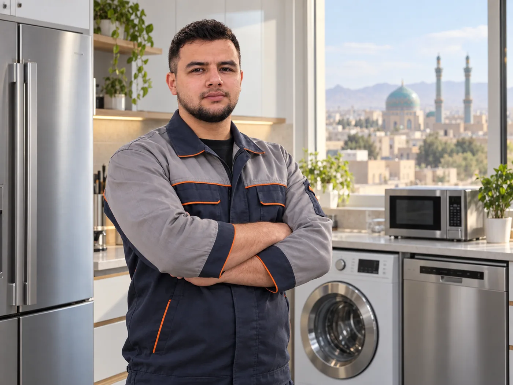

مقالات مفید و کاربردی درباره نگهداری، عیبیابی و تعمیر لوازم خانگی

خرابی یخچال یا لباسشویی میتواند کارهای روزمره را مختل کند. اگر در سبزوار هستید، پیش از تصمیم برای تعمیر یا تعویض، نشانههای خرابی و راه انتخاب تعمیرکار را بشناسید.